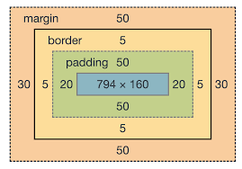

Opdracht 1 - eerste html tags
In deze opdracht gaan we aan de slag met verschillende html elementen.
Zoals header en paragraph elementen
Opdracht 2 - links en images
In deze opdracht gaan we de nieuw geleerde elementen toepassen, zoals links en images
Dingen die ik leuk vind:
- Nieuw dingen leren
- Sporten
- Muziek
Opdracht 3 - symantic styling
In deze opdracht hebben we geleerd over symantic HTML
Semantiek is: onderdeel van de taalkunde dat zich bezighoudt met de betekenis van woorden
Opdracht 4 - opmaak via CSS
Freestylen met CSS
De eerste kennismaking met Cascading Style Sheets, CSS for short
Opdracht 5 - Margin & Paddin / block & Inline elementen
Meer uitleg over het css box model, en inline en block elementen
Bijvoorbeeld Span is een inline element en div is een block element

Opdracht 6 - CSS Queries
Toepassen van CSS queries voor een responsive website